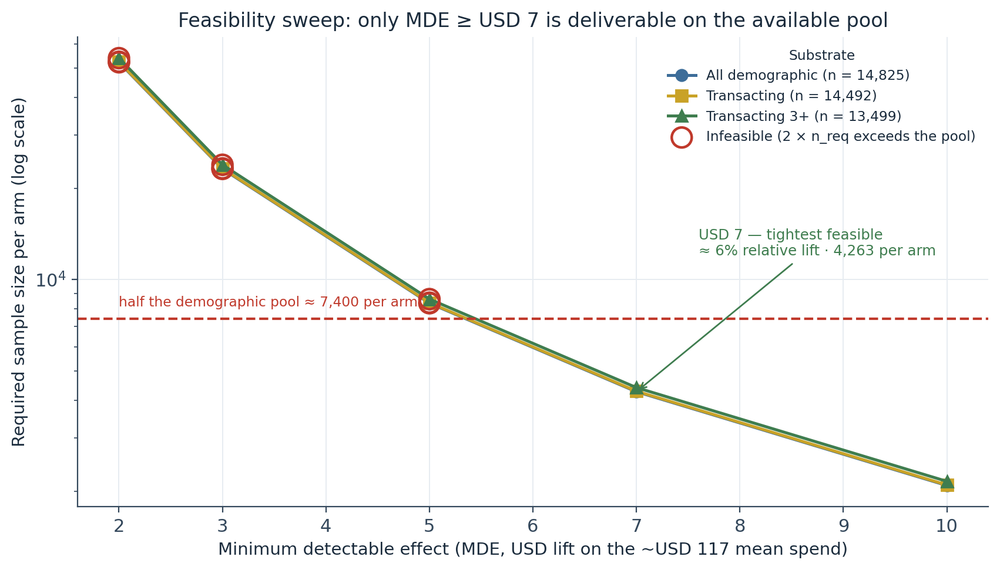
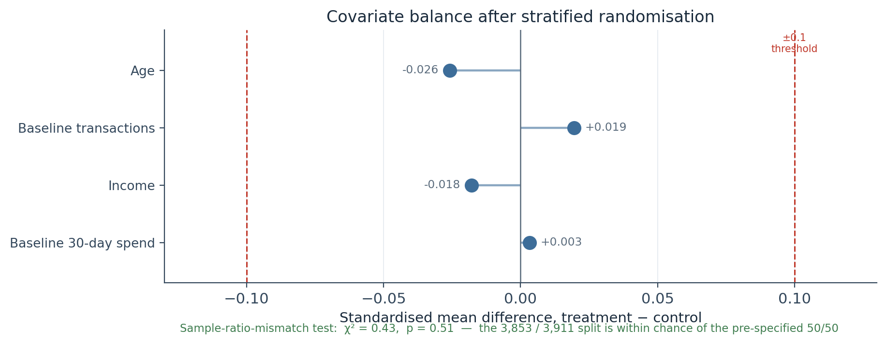
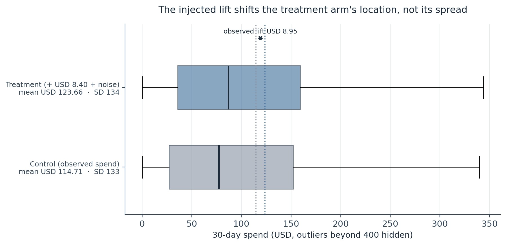
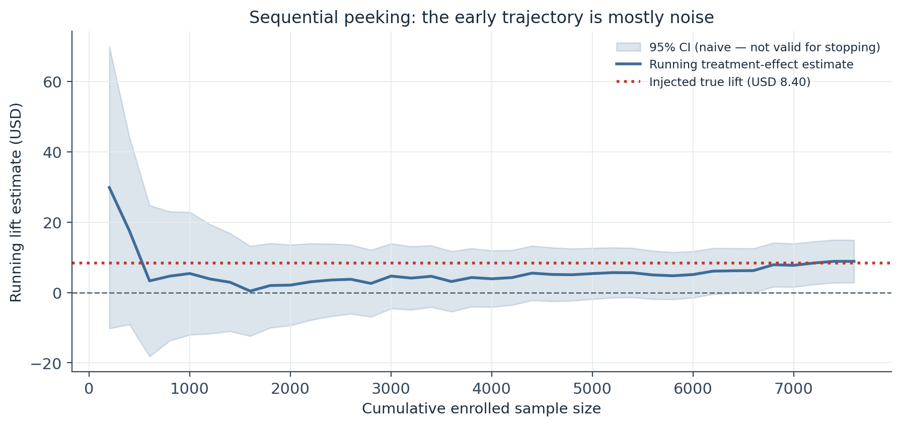
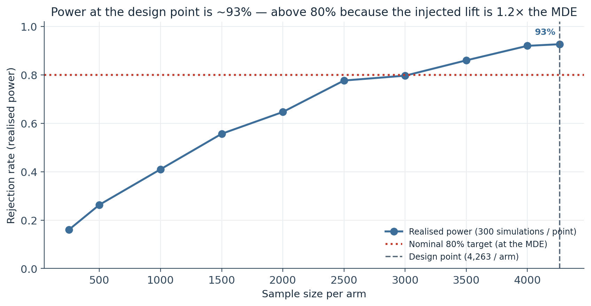
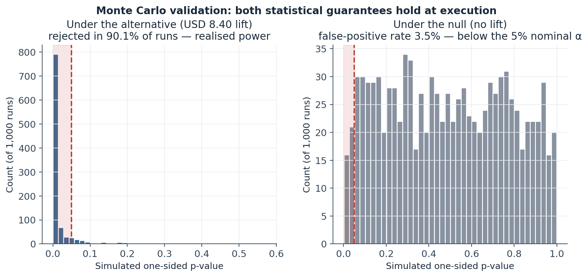
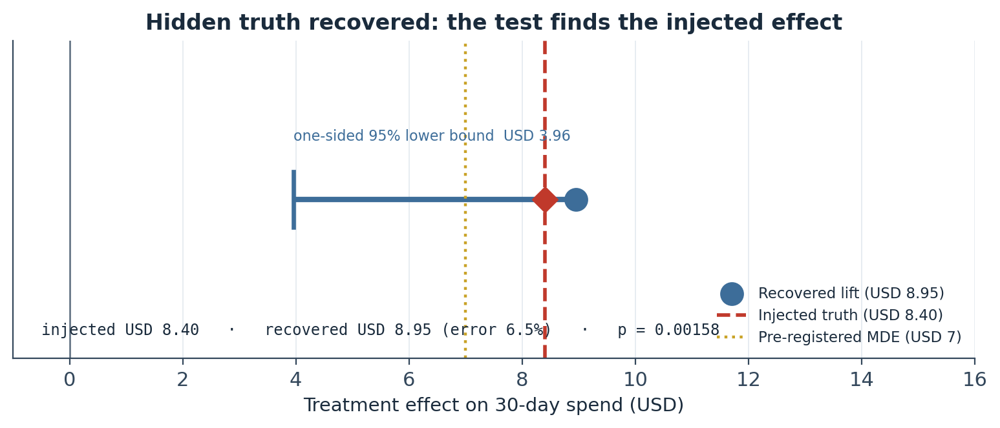

Abstract
This is a methods demonstration: how to design a trustworthy randomised experiment on a dataset that cannot supply a clean control arm. The Starbucks/Udacity capstone data contains no genuine untreated pool — only 6 of 17,000 customers received zero offers during the observation window — so a real “offer sent” vs “no offer sent” comparison is structurally impossible. The design instead estimates the incremental effect of a candidate discount offer: the control arm’s outcome is observed 30-day spend (the “what they would have spent anyway” counterfactual) and the treatment arm’s outcome is observed spend plus a known injected lift plus noise, with the true lift declared before the test runs and hidden during analysis. A design-parameter sweep across three candidate substrates and five candidate minimum detectable effects (MDEs) rejects the obvious choices: a USD 2 MDE requires ~52,000 customers per arm against a ~14,800 pool, a USD 5 MDE requires ~8,400, and only an MDE of USD 7 or larger (≈6% relative lift, 4,263 per arm) is deliverable; the sweep also shows that filtering to transacting customers does not reduce the outcome standard deviation. Before the primary test, 2,000 full-pipeline Monte Carlo runs confirm both statistical guarantees: realised power of 90.1% (Wilson 95% CI [88.1%, 91.8%]) under the injected effect, and a realised Type I error rate of 3.5% ([2.5%, 4.8%]) under the null. The pre-registered one-sided Welch t-test then recovers an observed lift of USD 8.95 against the injected USD 8.40 — a 6.5% recovery error — with t = 2.95, one-sided p = 0.0016, and a one-sided 95% lower confidence bound of USD 3.96. The transaction-count guardrail shows no cannibalisation (p = 0.39). The contribution is the pipeline, not the effect: a feasibility-checked, Monte-Carlo-validated, guardrail-instrumented design procedure that catches the underpowered-experiment mistake before any budget is committed.
Keywords: A/B test design, power analysis, minimum detectable effect, design feasibility, stratified randomisation, sample ratio mismatch, Welch t-test, Monte Carlo validation, Type I error, guardrail metric
Introduction
A randomised experiment is the reference standard that observational inference concedes it cannot meet, so it is worth establishing that standard concretely before the next study in this project turns to a non-randomised rollout. The purpose here is not to discover whether a particular offer works — the effect is injected — but to demonstrate a design procedure that would produce a trustworthy answer if the effect were real.
Two features of the dataset force design decisions that a textbook example would skip. First, there is no untreated population: essentially every customer received at least one offer during the 30-day window, so the experiment cannot compare “offer” against “no offer” and must instead compare “candidate offer plus business-as-usual” against “business-as-usual alone”, with the increment injected. Second, the eligible pool is small — 14,825 customers with complete demographics — which makes the minimum detectable effect a binding constraint rather than a free parameter. The design therefore leads with a feasibility sweep: for each candidate MDE, compute the required sample size and check whether the pool can supply it, before committing to a number.
The analysis then proceeds as a pre-registered experiment: fix the hypotheses and the MDE, draw a stratified 50/50 sample, check the randomisation, inject the effect, validate the design’s power and false-positive guarantees by Monte Carlo, run the primary test with the truth hidden, and check a guardrail. Every step is reported against the realised constraints of the data rather than a default.
Method
Data source
The eligible pool is the 14,825 customers with complete demographics from customer_features_gold, a Gold-layer table produced by the project’s medallion ETL pipeline from the Starbucks / Udacity Data Scientist Nanodegree capstone simulated-offers data (distributed on Kaggle). The primary outcome is total_spend — observed spend over the 714-hour (29.75-day) observation window. The candidate treatment offer is the top-performing discount in offer_performance_gold by mean attributed spend per exposure: a USD 2 reward, USD 10 spend-threshold, 10-day discount delivered on all four channels, with a 96.8% view rate and a 70.2% completion rate in the rollout data.
Pre-registered design
The design is fixed before any outcome is simulated (Table 1). The primary metric is mean 30-day spend per customer. The null hypothesis is equal mean spend across arms; the alternative is that treatment exceeds control. The test is one-sided at α = 0.05 — the business question is strictly whether the offer helps — with power set to the conventional 80%. Assignment is stratified by age band × income band at a 50/50 split, which reduces estimator variance without introducing bias. Duration is 30 days, matched to the source window so the control arm’s observed spend covers the same horizon as the treatment arm’s counterfactual. A guardrail metric — mean transaction count — is pre-specified to catch the failure mode where a discount lifts attributed spend while cannibalising purchase frequency.
Table 1
Pre-Registered Experimental Design
| Primary metric |
Mean 30-day spend per customer |
| Hypotheses |
H₀: μ(treatment) = μ(control) · H₁: μ(treatment) > μ(control) |
| Test |
Welch’s t-test, one-sided (alternative = "greater") |
| α |
0.05 (one-sided) |
| Power |
0.80 |
| Minimum detectable effect |
USD 7.00 (≈ 6% relative lift on the USD 117.03 substrate mean) |
| Outcome SD (design input) |
USD 129.97 (all demographic customers) |
| Sample size |
4,263 per arm · 8,526 total |
| Randomisation |
Stratified by age band × income band, 50/50 within stratum |
| Duration |
30 days (matched to the observation window) |
| Guardrail |
Mean transaction count per customer (no effect injected) |
Note. The MDE is the output of the feasibility sweep (Table 2, Figure 1), not a default. Required n per arm follows the standard two-sample formula n = 2σ²(z₁₋α + z₁₋β)² / MDE².
The feasibility sweep
For three candidate substrates — all demographic customers (n = 14,825), transacting demographic customers (n = 14,492), and customers with 3+ transactions (n = 13,499) — and five candidate MDEs (USD 2, 3, 5, 7, 10), the required per-arm sample size is computed and flagged feasible only if twice that size fits within the substrate (Table 2, Figure 1). The sweep is the pre-registration artifact: it makes the MDE choice a consequence of what the data can support rather than a convenient number.
Simulation model
The control arm’s outcome is observed total_spend, unchanged. The treatment arm’s outcome is observed total_spend + a constant injected lift of USD 8.40 + Gaussian noise with SD USD 5.00, clipped at zero. The injected lift is set at 1.2 × MDE: an effect exactly at the MDE would be recovered only about half the time by construction, so the margin reflects the realistic “the true effect is a little larger than the smallest one I care about” scenario while leaving clear separation from the null. The noise SD is deliberately modest so that any failure to recover the injected lift is attributable to statistical limits rather than an aggressive noise assumption.
Analysis
Post-randomisation: a sample-ratio-mismatch (SRM) χ² test against the 50/50 target, and standardised mean differences (SMDs) for age, income, baseline spend, and baseline transaction count. Design validation: a realised-power curve (300 resamples at each of ten sample sizes) and a 2,000-run Monte Carlo (1,000 under the injected effect, 1,000 under a zero effect) reporting realised power and realised Type I error with Wilson 95% intervals. Primary test: a one-sided Welch t-test with a one-sided 95% lower confidence bound. Sequential monitoring is illustrated with a naive-CI peek plot, shown as a teaching diagnostic, not a decision rule.
Software
Python 3.10 with scipy (ttest_ind, chisquare), statsmodels, numpy, and matplotlib. All random steps are seeded (np.random.seed(42), np.random.default_rng(42)); the pipeline reproduces bit-for-bit from the Gold table.
Results
Feasibility: only MDE ≥ USD 7 is deliverable
The sweep returns a clear verdict (Table 2, Figure 1). A USD 2 MDE is infeasible on every substrate — it needs roughly 52,000–54,000 customers per arm against pools of ~13,500–14,800. Even a USD 5 MDE needs ~8,400–8,600 per arm, which still exceeds the available pool once both arms are counted. The feasibility frontier sits at MDE ≥ USD 7: at that threshold ~4,260–4,400 per arm is required and every substrate can supply it with headroom.
Two findings from the sweep change the design that habit would have produced. First, the transacting-filter substrates do not reduce the outcome standard deviation — it holds near USD 130 across all three and in fact rises slightly when zero-spend customers are removed, because what is dropped is a low-variance region of the distribution, not a noise tail. Second, the “borrow a small MDE from common practice” default (USD 2 or USD 5) would have produced an infeasible design; the sweep caught it before execution. The design commits to the tightest feasible configuration: all demographic customers, MDE = USD 7 (≈ 6% relative lift on the USD 117 substrate mean), α = 0.05 one-sided, power = 0.80, giving 4,263 per arm (8,526 total) with ~42% of the pool left unused.
Table 2
Design-Parameter Sweep — Required Per-Arm Sample Size at α = 0.05 (One-Sided), 80% Power
| All demographic |
14,825 |
USD 117.03 |
USD 129.97 |
USD 2 |
1.71% |
52,215 |
no |
| All demographic |
14,825 |
USD 117.03 |
USD 129.97 |
USD 3 |
2.56% |
23,207 |
no |
| All demographic |
14,825 |
USD 117.03 |
USD 129.97 |
USD 5 |
4.27% |
8,355 |
no |
| All demographic |
14,825 |
USD 117.03 |
USD 129.97 |
USD 7 |
5.98% |
4,263 |
yes |
| All demographic |
14,825 |
USD 117.03 |
USD 129.97 |
USD 10 |
8.54% |
2,089 |
yes |
| Transacting |
14,492 |
USD 119.72 |
USD 130.22 |
USD 5 |
4.18% |
8,388 |
no |
| Transacting |
14,492 |
USD 119.72 |
USD 130.22 |
USD 7 |
5.85% |
4,280 |
yes |
| Transacting 3+ |
13,499 |
USD 126.38 |
USD 132.03 |
USD 5 |
3.96% |
8,622 |
no |
| Transacting 3+ |
13,499 |
USD 126.38 |
USD 132.03 |
USD 7 |
5.54% |
4,399 |
yes |
| Transacting 3+ |
13,499 |
USD 126.38 |
USD 132.03 |
USD 10 |
7.91% |
2,156 |
yes |
Note. Abridged to the decision-relevant rows; the USD 2 and USD 3 rows are infeasible on all three substrates. SD does not fall — and slightly rises — under the transacting filters. Chosen design in bold.
Figure 1
Required Sample Size vs Minimum Detectable Effect, by Substrate

Note. The three substrate curves are nearly indistinguishable — filtering to transacting customers changes the required sample size by less than 3%.
Assignment and balance
Stratified assignment drew 7,764 customers (3,853 treatment, 3,911 control) — 762 short (8.9%) of the design target of 8,526. The shortfall is a consequence of the stratification rules: strata with fewer than four customers are dropped (meaningful randomisation is not possible below that), and oversized strata are capped so a few large cells do not dominate. Accepting the shortfall is preferable to relaxing the minimum-cell rule, which would reintroduce the variance the stratification exists to remove; at ~3,900 per arm the test remains above the threshold for the chosen MDE.
Both post-randomisation checks pass (Figure 2). The SRM test returns χ² = 0.43, p = 0.51 — the realised split is within chance of 50/50. Covariate balance is tight: standardised mean differences are −0.026 for age, −0.018 for income, +0.019 for baseline transaction count, and +0.003 for baseline spend — all far inside the ±0.1 convention. The primary test can be read at face value.
Figure 2
Covariate Balance After Stratified Randomisation (Love Plot)

Note. SMD = (mean treatment − mean control) / pooled SD. The ±0.1 lines are the conventional threshold for a covariate imbalance worth adjusting for.
The simulated outcome
Injecting the USD 8.40 lift plus noise into the treatment arm produced a treatment mean of USD 123.66 and a control mean of USD 114.71 — an observed lift of USD 8.95 — with the medians shifting in the same direction (USD 91.30 vs USD 80.55) and the standard deviations essentially unchanged across arms (USD 133.63 vs USD 133.38), the expected signature of an additive constant lift on a heavy-tailed baseline (Figure 3).
Figure 3
Simulated 30-Day Spend by Arm

Note. The additive lift moves location, not spread — the two arms’ SDs differ by less than USD 1.
Sequential monitoring
The running treatment-effect estimate bounces within a wide naive confidence band at small samples — starting near USD 30, dipping toward USD 3 by ~600 enrolled, then converging to the injected USD 8.40 as the sample fills (Figure 4). A stakeholder who stopped at the first peek crossing zero would inflate Type I error substantially; one who stopped when the estimate first exceeded the MDE would cherry-pick the sample size. The design’s α budget is spent on a single pre-registered final test, not on the trajectory; a production rollout that genuinely needs interim looks would use α-spending (O’Brien–Fleming, Pocock) or a Bayesian stopping rule.
Figure 4
Running Treatment-Effect Estimate as the Sample Accumulates

Note. The confidence band is naive — using it to stop early would inflate α. Shown as a teaching diagnostic only.
Design validation by Monte Carlo
The realised-power curve rises from ~16% rejection at 250 per arm to ~93% at the design point of 4,263 per arm (Figure 5). That the design-point value exceeds the nominal 80% is correct behaviour, not over-delivery: the 80% promise holds at the MDE (USD 7), and the simulation injects USD 8.40 (1.2 × MDE), which naturally produces higher power. Power below ~1,500 per arm collapses — at 500 per arm the test barely clears 26% — so a “smaller pilot” of this experiment would mostly fail to detect the real effect.
The 2,000-run full-pipeline Monte Carlo confirms both halves of the design’s promise (Figure 6, Table 3). Under the injected effect, the test rejected in 90.1% of 1,000 runs (Wilson 95% CI [88.1%, 91.8%]) — above 80% for the 1.2 × MDE reason above. Under a zero effect, the false-positive rate was 3.5% ([2.5%, 4.8%]) — below the nominal 5%, i.e. the test is slightly conservative, which is the benign direction. The p-value histograms make the story visual: heavily concentrated near zero under the alternative, roughly uniform on [0, 1] under the null — the expected shape for a correctly calibrated test.
Figure 5
Realised Power vs Sample Size per Arm

Note. 300 simulations per point. The curve would cross 80% near the MDE-equivalent effect; the injected effect is 1.2 × MDE, so the design point sits above.
Figure 6
Monte Carlo Validation — p-Value Distributions Under the Alternative and the Null

Note. A spike near zero in the right panel would indicate a liberal test declaring spurious findings; its absence is the empirical confirmation the test is well-behaved.
Primary test and guardrail
The pre-registered one-sided Welch t-test recovered an observed lift of USD 8.95 against the injected USD 8.40 — a recovery error of USD 0.55 (6.5% of the true effect) — with SE USD 3.03, t = 2.95, one-sided p = 0.0016 (about one-thirtieth of α), and a one-sided 95% lower confidence bound of USD 3.96 (Figure 7, Table 3). The null of no effect is rejected decisively.
One caveat: the lower bound (USD 3.96) sits below the pre-registered MDE of USD 7. The test rejects the null of no effect, not the stricter null of “effect at least MDE-sized”; those are different hypotheses and the design pre-registered only the weaker one. Concluding the effect is at least MDE-sized would need a larger sample or a non-inferiority-style test.
The transaction-count guardrail is silent, as expected: treatment and control mean transactions are 8.64 and 8.54 (p = 0.39), nowhere near rejection. The simulation injected only a spend effect, so no cannibalisation signal should appear; the point is that the logic is instrumented to catch one if it did.
Figure 7
Injected vs Recovered Treatment Effect

Note. The recovered estimate brackets the injected truth; the one-sided lower bound clears zero but not the MDE.
Table 3
Simulated Experiment — Results Summary
| Assigned (treatment / control) |
7,764 (3,853 / 3,911); 8.9% below the 8,526 target |
| SRM test |
χ² = 0.43, p = 0.51 — balanced |
| Covariate SMDs (age / income / spend / transactions) |
−0.026 / −0.018 / +0.003 / +0.019 — all |SMD| < 0.03 |
| Simulated outcome mean (treatment / control) |
USD 123.66 / USD 114.71 |
| Observed lift |
USD 8.95 (injected USD 8.40; recovery error 6.5%) |
| Welch t-test |
t = 2.95, one-sided p = 0.0016 |
| One-sided 95% lower bound |
USD 3.96 |
| Monte Carlo realised power (1,000 runs) |
90.1% (Wilson 95% CI [88.1%, 91.8%]) |
| Monte Carlo realised Type I error (1,000 runs) |
3.5% (Wilson 95% CI [2.5%, 4.8%]) |
| Realised power at the design point (curve) |
92.7% |
| Guardrail — mean transactions (treatment / control) |
8.64 / 8.54, p = 0.39 — no cannibalisation |
Note. All values reproduce exactly from the seeded pipeline.
Discussion
What the design demonstrates
The procedure delivered what it was built for: an injected effect declared in advance was recovered to within 6.5% by a test whose power and false-positive guarantees had been empirically confirmed beforehand. The single most valuable step is the feasibility sweep. It caught that the obvious USD 2 MDE would have required ~52,000 customers per arm against a pool of ~14,800 — a design with essentially no chance of detecting anything short of a catastrophic effect. Running that experiment would have burned a quarter of rollout budget and produced a go/no-go decision on noise. Checking feasibility first cost minutes.
The counterfactual limitation
The control arm’s outcome is observed spend from customers who received other offers, not spend from a genuine no-offer holdout — because the data contains only 6 zero-offer customers. The experiment therefore estimates the incremental effect of one candidate offer on top of business-as-usual, and any real deployment of this design would need a randomised holdout baked into the offer-rollout tooling to anchor the counterfactual properly. This is a data limitation, stated plainly, not a flaw in the procedure.
Other limitations
The effect was injected with a homogeneous additive-plus-Gaussian model; real offer effects are heterogeneous across customers, which the next study in this project takes up with per-customer effect estimation. The USD 7 MDE, while the tightest feasible here, is a 6% relative lift — a business wanting to detect smaller effects would need a larger pool or a variance-reduction technique (CUPED with a pre-period covariate, or covariate adjustment in the test), neither of which the 30-day window supports. The sequential-monitoring section used naive intervals for illustration; a production rollout with interim looks needs formal α-spending. And the ~2,175 customers without demographics cannot be reached by demographic-stratified assignment, so the addressable pool is structurally capped.
Conclusion
A trustworthy experiment on this data is possible, but only after conceding that the control arm is a business-as-usual baseline rather than a true holdout, and after letting a feasibility sweep — not habit — set the minimum detectable effect. The reusable part is the pipeline: sweep → randomise → validate → test → guardrail, parameter-driven and Monte-Carlo-checked, which turns “we ran an A/B test” into “we produced evidence we can act on.”
References
Cohen, J. (1988). Statistical power analysis for the behavioral sciences (2nd ed.). Lawrence Erlbaum Associates.
Harris, C. R., Millman, K. J., van der Walt, S. J., Gommers, R., Virtanen, P., Cournapeau, D., Wieser, E., Taylor, J., Berg, S., Smith, N. J., Kern, R., Picus, M., Hoyer, S., van Kerkwijk, M. H., Brett, M., Haldane, A., del Río, J. F., Wiebe, M., Peterson, P., … Oliphant, T. E. (2020). Array programming with NumPy. Nature, 585, 357–362. https://doi.org/10.1038/s41586-020-2649-2
Kohavi, R., Tang, D., & Xu, Y. (2020). Trustworthy online controlled experiments: A practical guide to A/B testing. Cambridge University Press. https://doi.org/10.1017/9781108653985
O’Brien, P. C., & Fleming, T. R. (1979). A multiple testing procedure for clinical trials. Biometrics, 35(3), 549–556. https://doi.org/10.2307/2530245
Virtanen, P., Gommers, R., Oliphant, T. E., Haberland, M., Reddy, T., Cournapeau, D., Burovski, E., Peterson, P., Weckesser, W., Bright, J., van der Walt, S. J., Brett, M., Wilson, J., Millman, K. J., Mayorov, N., Nelson, A. R. J., Jones, E., Kern, R., Larson, E., … Vázquez-Baeza, Y. (2020). SciPy 1.0: Fundamental algorithms for scientific computing in Python. Nature Methods, 17, 261–272. https://doi.org/10.1038/s41592-019-0686-2
Welch, B. L. (1947). The generalization of “Student’s” problem when several different population variances are involved. Biometrika, 34(1–2), 28–35. https://doi.org/10.1093/biomet/34.1-2.28
Wilson, E. B. (1927). Probable inference, the law of succession, and statistical inference. Journal of the American Statistical Association, 22(158), 209–212. https://doi.org/10.1080/01621459.1927.10502953
Starbucks, & Udacity. (2018). Starbucks Capstone Challenge simulated offers dataset [Data set]. Retrieved from Kaggle (I. Muliar, mirror). https://www.kaggle.com/datasets/ihormuliar/starbucks-customer-data
Simulation study: the treatment effect was injected, not observed. The reported recovery, power, and Type I error describe the design’s behaviour under the stated simulation model; a real deployment would require a randomised no-offer holdout to anchor the counterfactual.